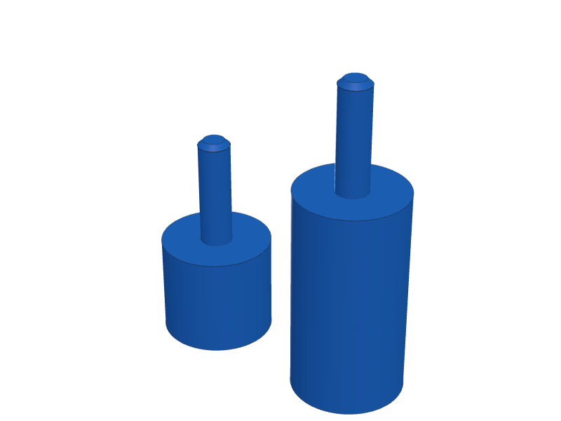

What I value, and how I work
What I value
One of the most important things to me in design is accessibility. I believe that good design should be usable by everyone, regardless of their abilities or disabilities.
How I approach design
I first start by brainstorming multiple, diverging ideas and then evaluate them based on the constructive criticism from my peers. In project 1, I brainstormed several concepts and used this process to land on my final idea of using a lamp to represent myself.
Showing that something is wearing out
Early concept sketches exploring how an object could show its state changing with each interaction, then signal that it needs to rest or be repaired.
We were tasked to create a "family of buttons" that interacted with each other, and also reflected our own personality. I ideated several concepts, generally focusing on the idea of "energy depletion" over repeated interactions. As we brought our individual ideas together, I helped discover the novel interactions between each of our buttons with the help of my teammates' feedback.
Divergent concepts
I sketched five loops of use and recovery, then marked each one before choosing a direction.
Ceiling light
Dims with each click until it shows "down for maintenance." Meaning is clear and versatile for the group.
Battery
Drains, then recharges at the outlet. Too basic.
Moon phases
Waxes and wanes in a cycle. Not a great fit.
Fighter's health bar
Stick figure loses health and recovers. Has potential but would be hard to collaborate on.
The prototype: a lamp that wears out
Each pull of the cord wears the lamp down a step, until it needs a minute to recover.
From sketch to prototype
- Chose the pull-cord lamp from Sketch 1.2. I chose the floor lamp because its tall and can more easily represent me, a human.
- Wear shows through the lamp's body, not just its brightness. The prototype slowly degrades in addition to dimming to reflect the body language of a person being worn down.
- Recovery time went from hours to one minute. This was simply to make the cycle more visible in a demo. I personally need at least a day to recover!
What I'd do differently
I might try to draw my lamp in more detail, adding broken pieces around it. I might also try to personify the lamp a little bit more so it's clear that it reflects a person.
Cubey: an expert you can see, inside the CAD software
Concept sketches exploring how a remote expert could guide a novice in CAD software like Blender, without falling back on screen sharing.
Our goal was to embody the communication between an expert and a novice learning CAD software. I brainstormed several ways the expert could guide or correct the novice, critiqued each one with I like / I wish / What if, and landed on an avatar that the expert controls with their own body language. From there I worked out how the avatar gives hints, how the expert controls it, and revised the controls after a teammate's critique.
How can we embody communication from an expert to a novice user in CAD software without relying on the traditional "screen sharing" method?
→ Embody the expert using an avatar controlled by the expert's physical movements and body language.
Divergent concepts
I brainstormed four ways an expert could guide a novice, sketched three of them with an I like / I wish / What if critique, and picked one direction.
Approval overlay
The novice's actions wait for the expert to approve them, like a Git pull request. Too much of a hindrance.
"?" question cursor
The novice switches to a "?" cursor to ask about any spot during a live lesson. Lets them express confusion, but the expert can only answer by typing or talking.
Recorded sessions and hints
The expert rewatches and "grades" the novice's work, or sets up a "test" with hints, where the correct button shakes if the novice takes too long.
Expert-controlled avatar
A "Clippy" style avatar on the novice's screen that mirrors the expert's facial expressions, like a VTuber. Very expressive.
Converging on Cubey
A cube is Blender's default object, so we designed a "Clippy" style avatar that is cute and relevant to the software. It is also much easier to animate than a full human avatar. We also wrote down three important criteria for the design.
I then sketched how Cubey shows the novice what to do without a second cursor. Just looking at a button is ambiguous when buttons are close together, so hints are two-tiered: Cubey looks first, then points and highlights. To improve on Jashan's hot/cold idea, Cubey gives a thumbs up when the novice is doing well, and puts a hand up with a nervous face when they're off track. That last one is still marked as unsure. Cubey also has an explanation mode.
How does the expert control Cubey?
I compared three ways for the expert's body to drive the avatar, plus a simple way to move it around the screen.
Webcam + face/hand tracking
Low effort and inexpensive.
Motion-capture suit
Precise, but arduous and expensive for the payoff.
Hotkeys for preset actions
Not as authentic as face/hand tracking, and more work for the expert.
Arrow keys to move
Could be combined with the webcam for extra depth.
From pointing at a webcam to WASD and a mouse
A teammate pointed out that hand tracking is hard for pointing, especially if the expert doesn't have room to move their arms in view of the webcam, and it would also be hard to highlight the correct button.
We moved avatar movement to WASD (or the arrow keys) so the expert's right hand is free for the mouse. Left-click makes Cubey point at that spot, and right-click highlights the selected button or area. The expert's cursor is only visible on their own monitor. The webcam still mirrors the expert's movements and expressions, and the expert can speak or type to accommodate accessibility needs, such as a mute expert.
Key decisions
- Chose the avatar from Sketch 2.4. The overlay's critique asked for a way to show body language, and the avatar was the only concept that did.
- Kept the idea of hints. The overlay's critique also wished for some sort of hint, so Cubey gives two-tiered hints: look first, then point and highlight.
- Pointing moved from the webcam to the mouse. After the critique, the mouse handles pointing and highlighting, WASD moves Cubey, and the webcam still mirrors the expert's body language.
What I'd do differently
One of our group's oversights was not considering the 3D environment for Cubey's interactions. We used a sketch of Blender to visualize the application, but because it was static, we didn't consider the challenges of navigating and interacting within a three-dimensional space. So next time, I will try to create a real demo rather than a proof-of-concept sketch. This would have immediately revealed the complexities of working in a 3D environment, causing us to come up with new ideas and solutions.
A lazy susan you can turn with a wave
Concept sketches for augmenting a shared meal, and the motorized lazy susan that grew out of my first one.
The brief asked us to augment one or more everyday objects with physical computing, using sensor inputs and electronic, physical outputs, to improve the experience of people eating together. I sketched three ideas and critiqued them with my group using I like / I wish / What if. My first sketch started from a problem I've seen at dim sum: a lazy susan loaded with dishes gets heavy, especially for a grandparent, so what if you could just "swipe" the table and a motor turned it for you?
Divergent concepts
I sketched three very different ways to augment a shared meal: changing the table, the diner, and who serves the food.
Hand-gesture lazy susan
Swipe in the air and a motor turns the table. Easier for grandma to turn. This is the one we built.
AR food glasses
Smart glasses label allergens and dietary info, and connect diners far apart for a shared AR "mukbang" with auto-translation.
Robot food butler
A small robot on the table listens for requests like "Can you give the fries to Timmy?" and delivers the dish.
Converging on the turntable
After critiquing everyone's sketches, the group chose to build a motorized lazy susan that diners control with hand gestures, the direction of Sketch 3.1. It keeps a familiar object that is already about sharing food, and takes the physical effort out of passing dishes around the table.
The system
An ordinary wooden lazy susan sits on a base board. Underneath, a 28BYJ-48 5 V stepper motor is bolted to a steel bracket, and a rubber friction wheel on a 3D-printed axle presses against the turntable, so when the motor turns, friction carries the turntable with it. An Arduino on the same board reads a joystick, an IR sensor and an ultrasonic sensor.
| Component | Type | Role |
|---|---|---|
| 28BYJ-48 stepper motor (5 V DC) | Output | Drives the friction wheel that turns the lazy susan. |
| Friction wheel on printed axle | Mechanism | Couples the motor shaft to the turntable. |
| Ultrasonic sensor | Input | Detects a hand to spin the platter. |
| IR sensor | Input | [What it does] |
| Joystick module | Input | [What it does] |
| Arduino | Controller | Reads the sensors and steps the motor. |
Building the drive
Getting a small stepper to turn a heavy wooden turntable was the main mechanical problem. These photos follow the build in order.
Test the friction wheel by hand
Holding the motor and wheel against the edge of the turntable to check that friction alone could turn it, and where the wheel should touch. (Photos 3.3, 3.4)
Mount the motor on a bracket
Bolting the stepper to a galvanized steel corner bracket so it holds the wheel at a fixed height and pressure against the turntable. (Photos 3.5 to 3.7)
Print an axle for the wheel
A printed axle joins the wheel to the motor's shaft, in two lengths. (Photo 3.8 and Model 3.1)
Wire the inputs and assemble
Mounting the Arduino, joystick, IR sensor and ultrasonic sensor on the base board, then setting the turntable on top. (Photo 3.1)
The printed axle, short and long
Both axles are 10 mm across. The short one is 19 mm long and the long one is 29 mm. The bottom has a D-shaped socket that fits over the stepper's flatted shaft, and a thin 3 mm pin on top carries the wheel.

drag to rotate · scroll to zoomModel 3.1 · Download the STL
Key decisions
- Augment an object diners already share. A lazy susan is already about passing food around a table, so motorizing it keeps the object familiar while making it easier to use.
- Drive the edge with a friction wheel. [Why this instead of a motor in the centre?]
- A printed axle to join the wheel and motor. The wheel didn't fit the stepper's shaft, so the axle adapts one to the other.
What's incomplete
- The "gesture" is detected only by the ultrasonic sensor sensing a hand. It doesn't recognize specific hand movements or positions.
- The drive sits beside the turntable on a separate board. Ideally it would be geared and built into the base of the lazy susan.
What I'd do differently
Use of generative AI
Tool: Claude (Anthropic)
How it was used: I gave Claude the portfolio brief and my Project 1 sketch PDFs, and asked for a partially completed portfolio website. It produced the page layout, styling, navigation and image viewer. For Part 2, I instructed Claude to use the same style and approach as Part 1.
Prompt (Project 1): "I am working on an individual portfolio assignment for a Human-Computer Interaction course. I've attached the assignment brief and my concept sketches from Project 1. I need a skeleton portfolio website so I can focus on documenting my process."
Prompt (Project 2): "Use these sketches for the Part 2 section of my portfolio. Model it exactly the same as Part 1."
Prompt (Project 3): I gave Claude my build photos, the axle model, the brief and my sketches, and asked it to add a Project 3 section in the same style: "dont mention any of my other group members ideas, this is a personal portfolio." It also rendered the axle model and built the interactive 3D viewer.
What is mine: All sketches, design ideas, critiques and decisions shown here. I reviewed and edited any AI-drafted text, and wrote the design philosophy, contribution and reflection sections myself.